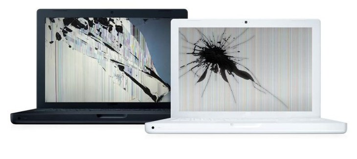

Замена экрана ноутбука, замена матрицы
У вас не работает экран ноутбука? Или вы случайно разбили экран ноутбука?
Не волнуйтесь, мы поможем вам и вашему ноутбуку и окажем услуги по ремонта матрицы ноутбука в г. Усть-Каменогорск быстро и качественно!
Но вы не расстраивайтесь, ведь 90% экранов взаимозаменяемы и мы сможем подобрать разбитый экран вашего ноутбука в короткие сроки, чтобы вы могли продолжить свою работу или развлечения.
Так что, если у вас не работает экран на ноутбуке, обращайтесь к мастерам "X2X" и вы останетесь довольны высоким уровнем сервиса и оперативностью. Сотни клиентов в Усть-Каменогорске выбирают именно нашу компанию за профессионализм и 25 лет опыта в ремонте компьютерной техники. Обращайтесь!
Не волнуйтесь, мы поможем вам и вашему ноутбуку и окажем услуги по ремонта матрицы ноутбука в г. Усть-Каменогорск быстро и качественно!
Замена матриц и экранов ноутбука
Специалисты нашего сервиса ремонтируют экраны ноутбуков в том случае, если можно гарантировать его надежную работу, в других случаях нерабочего или разбитого экрана производится замена матрицы на ноутбуке. Причем услуги по замене матрицы в Усть-Каменогорске оказывается с выздом на дом и на большинстве популярных моделей.
X2X- ремонт производит замену матриц экрана для ноутбуков популярных брендов: HP, Acer, Asus, Dell, Lenovo, Apple, Fujitsu, Samsung и другие. Ремонт ноутбука с заменой матрицы производится довольно быстро, в большинстве случаев достаточно 40-50 минут. Вы можете быть как жителем Усть-Каменогорска, так и Рудного и др.городов - в случае необходимости мы сделаем замену в срочном порядке.
Неисправности экрана ноутбука
Из нашего опыта вот самые частые проблемы с экранами ноутбуков: раздавили матрицу, трещины по экрану, подтеки на экране, экран ноутбука не работает, черный экран, еле видно изображение, помехи на экране... Эти и многие другие проблемы происходят именно с экраном, и не важно lcd-матрица или led-экран. А все потому, что сегодня ноутбук стал одним из самых важных помощников в жизни современного человека, а так как экран является одним из самых хрупких его компонентов именно поэтому он довольно часто ломается в самый неподходящий момент.Но вы не расстраивайтесь, ведь 90% экранов взаимозаменяемы и мы сможем подобрать разбитый экран вашего ноутбука в короткие сроки, чтобы вы могли продолжить свою работу или развлечения.
Так что, если у вас не работает экран на ноутбуке, обращайтесь к мастерам "X2X" и вы останетесь довольны высоким уровнем сервиса и оперативностью. Сотни клиентов в Усть-Каменогорске выбирают именно нашу компанию за профессионализм и 25 лет опыта в ремонте компьютерной техники. Обращайтесь!